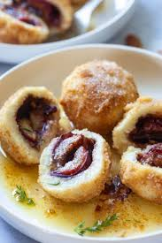

Plum Dumpling Recipe

Description
Delicious Cinnamon Plum Dumplings recipe in Butter Breadcrumbs Sauce is a simple, delicious, and beloved vegetarian dish from my childhood.
Ingredients
- 800 grams potatoes (starchy old potatoes work best)
- 250 grams strong flour (type 400)
- 1 tsp salt
- 2 eggs
- 12 plums
- 6 tsp sugar
- 3 tsp cinnamon
- 3 tbsp butter
- 3 tbsp breadcrumbs
Steps
- Wash the potatoes thoroughly, then place in a large pot and pour in water. Salt the water then cook the potatoes with skin for about 20-30 minutes, until they are fork-tender. Drain and set aside.
- Wash and pit the plums. You can half them or leave them whole (without the pit).
- Peel the potatoes while still warm and mash them. Add flour, salt, and eggs. Knead together by hand into a smooth and compact dough. Divide the dough into 12 equal pieces.
- With your hands, press each dough piece out on a floured surface to about 0,5 cm thick, roughly in the shape of a circle. At the center place a pitless plum, dust with half a teaspoon of sugar and 1/4 teaspoon cinnamon, then fold the dough over the fruit. Shape into dumplings and make sure to press the dough real well together.
- In a pan, melt 3 tbsp of butter and gently cook until the butter browns. Then add breadcrumbs and gently fry them while stirring for a couple of minutes.
- Put a pot of salted water to boil. When boiling, gently place dumplings into the water and cook for about 10 minutes, or until the dumplings rise in size and float to the top of the water. Once cooked, remove them from the pot gently and immediately transfer them into the browned butter breadcrumbs. Roll them around gently so the breadcrumbs stick to the dumplings, then transfer them to a serving dish and dust with sugar.
- Serve hot.